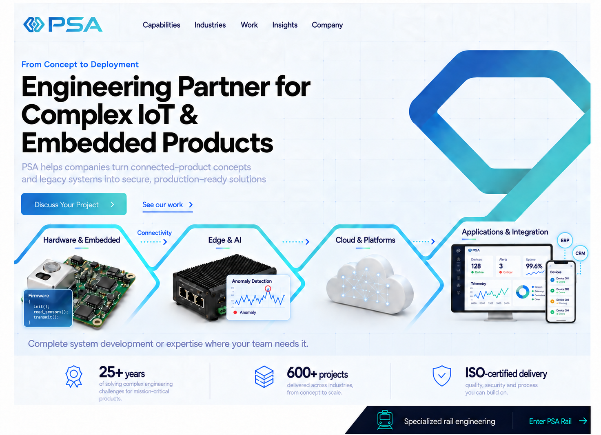
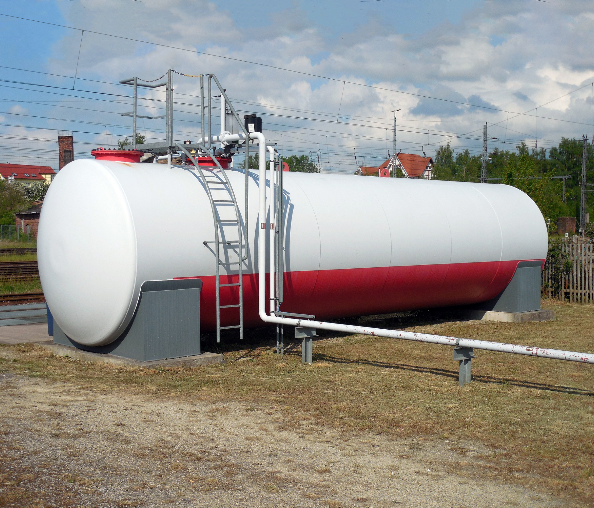

01
Hardware Engineering
Turn product requirements into reliable electronics, ready for prototyping and production.
- Electronic architecture & PCB design
- Sensor integration
- Prototype development
- Design for manufacturing
From Concept to Deployment
PSA helps companies turn connected-product concepts and legacy systems into secure, production-ready solutions.

Complete system development or expertise where your team needs it.
25+ yearsSolving complex engineering challenges
600+ projectsDelivered across industries
ISO 9001:2015Certified quality management
Our Engineering Expertise
We engineer the complete connected-product stack — or step in where your internal team needs specialized expertise.
Turn product requirements into reliable electronics, ready for prototyping and production.
Build the software that makes your devices reliable, responsive and maintainable.
Connect devices securely and keep data flowing across networks and environments.
Give teams the tools to manage devices and act on connected-product data.
Bring devices, software and business systems together in one working architecture.
Turn device and operational data into intelligence for real-world decisions.
Where PSA Fits
Building something new, improving an existing system or expanding your team? Engage the expertise your project needs.
Turn an idea or early prototype into a complete connected product.
Architecture · Prototyping · Full-stack developmentTailor a proven SoM, embedded computer or electronics platform to your product.
Carrier boards · Peripherals · Hardware optimizationUpdate aging hardware, firmware or applications and extend your product’s useful life.
Hardware redesign · Linux migration · ConnectivityMake devices, platforms and enterprise applications work together.
Device-to-cloud · ERP & CRM · Multi-vendor integrationResolve architecture, performance or integration issues blocking your next milestone.
Technical assessment · Root-cause analysis · Targeted fixesAdd specialized expertise to move development, testing or integration forward.
Hardware & firmware · Software · Verification & validationWe integrate AI into devices, platforms and workflows.
Run AI directly on devices.
Detect defects and monitor environments.
Spot early signs of equipment issues.
Turn operational data into workflow actions.
…having full confidence in the product.
I certainly wish we had started with PSA from the get-go…
How We Work
A clear engineering process, with support at every stage.
Requirements & constraints
System architecture
Integrated prototypes
Verification results
Production release
Engage us for the full lifecycle or at the stage you need.
Two Areas of Expertise
Build complete connected systems, from custom electronics to cloud platforms and applications.
Explore IoT EngineeringDevelop, modernize and verify the hardware and software behind railway operations.
Explore Railway EngineeringConnected Expertise
Bringing together hardware, connectivity, security and cloud expertise.

Case Study
System architecture and component selection to prepare a cost-conscious product for development.
View Case StudyCase Study
HMI development and testing, with page loading times reduced by up to 7×.
View Case StudyInsight
How requirements, test coverage and system integration shape effective ATC validation.
Read ArticleDiscuss Your Engineering Challenge
From hardware and embedded software to cloud and integration, we help move your project from concept to deployment.